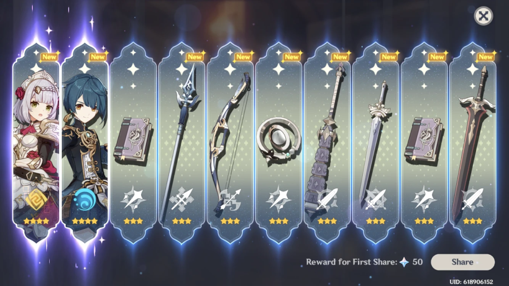

A Gamblificação de todas plataformas
Há uns 15 anos atrás a tendência era dizer: 'tudo está virando um jogo com a gamificação!' nesse ano de 2025 a nova tendência é dizer: 'tudo é um jogo de azar'... e eu não estou me sentindo com sorte.
Veja no canal:
- Eu tive a ideia de falar sobre isso por causa desse romhack de pokemon emerald
- Só que recentemente eu comecei a notar que existe uma tendência muito parecida invadindo todo tipo de aplicativo e plataforma digital.
- Vocês já devem conhecer a 'ludificação' ou 'gamificação':
A ludificação (recursos lúdicos), ou gameficação (do inglês: gamification), é o uso de técnicas e dinâmicas de jogos para enriquecer outros contextos diversos, normalmente não relacionados a jogos. Tipicamente aplica-se ludificação a processos e aplicações com o objetivo de incentivar as pessoas a adotá-lo ou influenciar a maneira como são usados.
...
Dentre os objetivos da ludificação podemos destacar: tornar a tecnologia mais atraente, estimular os usuários a se engajarem com comportamentos desejados, mostrar um caminho para o domínio e autonomia, ajudar a resolver problemas sem ser uma distração, e tirar vantagem da predisposição psicológica humana de engajar em jogos. Esta técnica pode encorajar as pessoas a realizar tarefas que elas normalmente considerariam chatas, como completar questionários, fazer compras, completar formulários de impostos ou leitura de sites.
https://pt.wikipedia.org/wiki/Ludifica%C3%A7%C3%A3o
- A gamificação já é um modelo comum nas plataformas de trabalho intermitente ('gig work' ou 'uber') e são claramente derivadas de mecânicas que foram evoluindo (ou coevoluindo) com os jogos online / mobile.

https://www.uber.com/pt-BR/blog/objetivos-da-missao/
-
Missões diárias
-
Gacha / Lootboxes
-
Bônus por frequência
-
Diversos tipos de 'caixas de skinner'
-
Porém o que eu estou propondo nomear agora (por que o fenômeno já é observável) é a mistura da gamificação já estabelecida com os estudos psicológicos do vício em jogos de azar
-
Da mesma forma que os jogos digitais foram pioneiros no que foi adotado como 'gamificação' posteriormente nós já temos mecânicas bem maduras do que eu vou chamar 'gamblificação' sendo adotadas em outras plataformas
-
Exemplos mais 1:1 como por exemplo, roleta da Shopee:
- Ou como o aplicativo Yotta que era o que chamamos aqui de 'fintech', mas que incluiu elementos de cassino (gire uma roleta para pagar essa conta) e agora transicionou 100% para uma plataforma de apostas
- Obviamente temos o caminho convergente das 'bets' que usam a linguagem dos jogos digitais + jogos cassa níquel para criar uma experiência personalizada de apostas no seu telefone
- Também plataformas apostas esportivas ou 'fantasy draft' que começam a se popularizar no Brasil.
- E patrocinam pesadamente o futebol
- O que nos leva aos 'prediction markets' (mercados preditivos)
Mercados preditivos são mercados onde fazem-se apostas sobre prognósticos de eventos, como eleições, a evolução de uma bolsa de valores ou o volume de negócios de uma empresa. Não há necessidade de estabelecer uma amostra representativa, a despeito do que é feito em uma pesquisa estatística. O conjunto das apostas forma uma decisão coletiva que é às vezes aceita como mais precisa que uma pesquisa.
https://pt.wikipedia.org/wiki/Mercados_preditivos
-
Talvez vocẽs já tenham ouvido algum liberal falar sobre como o 'mercado' é um excelente agregador de informações sobre a economia e a ideia dessas plataformas é expandir isso para todos os aspectos da vida
-
O CEO de uma dessas plataformas chamada Kalshi recentemente disse algo como: "a ideia é financializar tudo e criar um ativo negociável de qualquer diferença de opinião"
-
Mercado preditivos se propagandeiam como 'notícias 2.0' só que a única maneira disso acontecer é se eles forem ligados desconfortavelmente ao insider trading (negociações com informações privilegiadas).
-
Um executivo da Coinbase recentemente disse: "será que nós queremos proibir o insider trading? por exemplo se o canal do Suez vai abrir ou não, será que eu não quero um almirante que está sentado dentro do navio lá investindo nessa opinião?"
-
Nos EUA a regulamentação dessas plataformas não vai vir. Filho do Donald Trump já é conselheiro de duas delas (Kalshi e Polymarket) e a Truthsocial terá um spinoff de mercado preditivo.
-
Em resumo: eu não estou descrevendo nada novo aqui, mas existe uma maneira nova de financeirizar tudo e 'democratizar' o endividamente da classe trabalhadora e nós podemos estudar e prever isso olhando para os jogos online, jogos mobile e economia dos EUA onde diversas dessas inovações satânicas chegam primeiro.
Referências
https://www.yahoo.com/news/articles/uber-rolls-digital-tasks-drivers-190000202.html